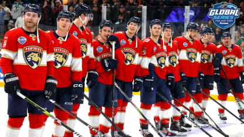
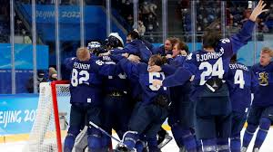
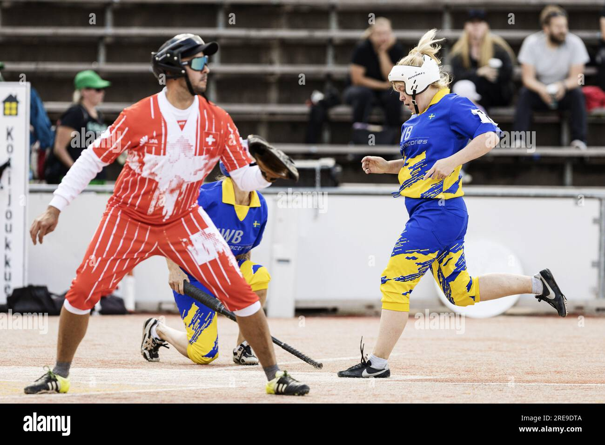
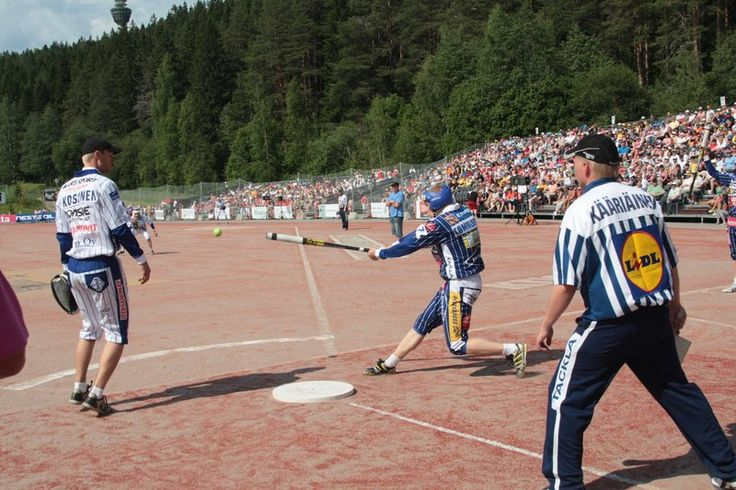

| |
Home |
Places |
Historic Data |
Characters |
Sports |
Economy |
Gastronomy |
contact |
Sports In Finland |
Many sports are practiced in Finland, but like all countries, they don't excel in every one. One of their most successful sports is ice hockey, which is the most popular and enjoys great international success. But they don't only excel in hockey; they also excel in other sports like pesäpallo, a very traditional and famous sport in Finland. |
 |
Hockey in Finland |
| Ice hockey is the soul of Finland because it embodies the resilience and character of the Finnish people in the face of their natural environment. In a country of long winters, the ice is not an obstacle, but a playground that forges discipline and unity. It is lived as a daily ritual, from matches on frozen lakes to the professional fervor of the Liiga, connecting all generations. Its importance lies in being the greatest symbol of national pride, capable of uniting the entire country in massive celebrations and demonstrating that a small nation can hold its own against world powers. |
|  |
 |
 |
Pesäpallo in Finland |
| Pesäpallo is Finland's national sport, created in the 1920s as a tactical and patriotic tool that is now a cultural highlight of the summer. Its main difference from baseball is the vertical pitch, a technique that eliminates downtime and transforms it into an extremely fast-paced, strategy-based "physical chess." Taught in all schools and prioritizing intelligence over strength, it has become a unique symbol of identity that unites Finland's rural and urban communities. |
|
|  |
 |
 |
Copyright2026Team:Valentina,Iker,Gus,Yamil,Matias.© |